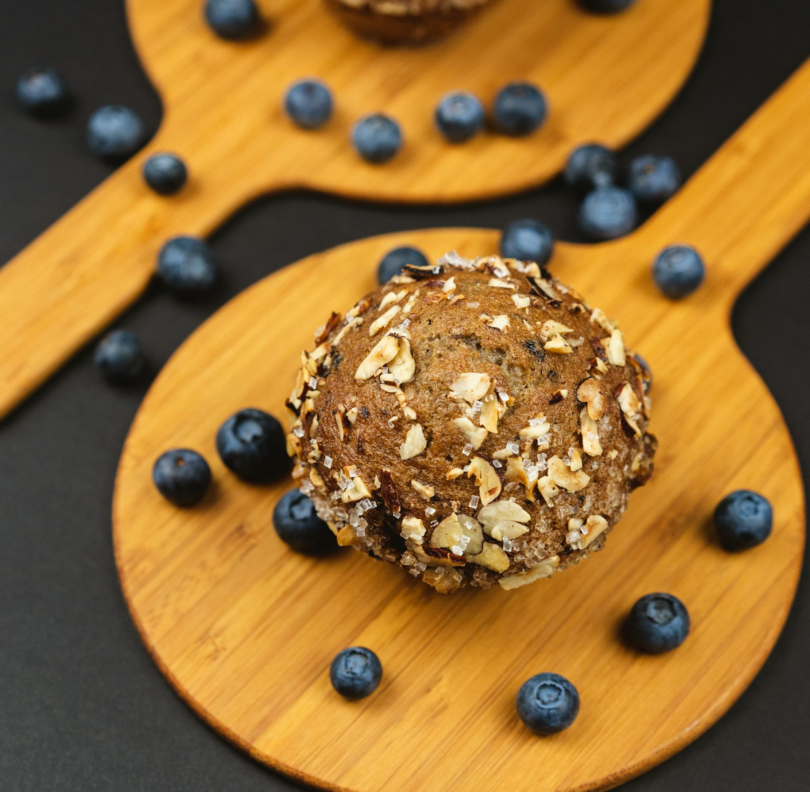

Comidas

Ingredientes: quinoa, tomate, pepino, cenoura, grão de bico, azeite e limão.
Modo de preparo: Cozinhar a quinoa, misturar com legumes crus e grão de bico cozido, temperar com azeite, sal e limão.
Ingredientes: batata-doce cozida, azeite, sal, pimenta e ervas a gosto.
Modo de preparo: Amasse a batata cozida, misture temperos e molde bolinhos. Asse até ficarem firmes e dourados.
Ingredientes: abóbora, gengibre, cebola, azeite, sal e água.
Modo de preparo: Refogue abóbora e gengibre, cubra com água e cozinhe bem. Bata até ficar cremosa e sirva quente.
Sucos
Ingredientes: melancia gelada, folhas de hortelã fresca e gelo.
Modo de preparo: Bata a melancia gelada com hortelã fresca até ficar homogêneo. Sirva na hora para mais frescor.
Ingredientes: couve, espinafre, limão, maçã verde e água.
Modo de preparo: Bata folhas verdes com frutas cítricas e água. Coe se preferir um suco mais leve.
Ingredientes: laranja, cenoura e gelo.
Modo de preparo: Bata o suco de laranja com a cenoura até ficar liso. Sirva fresco e gelado.